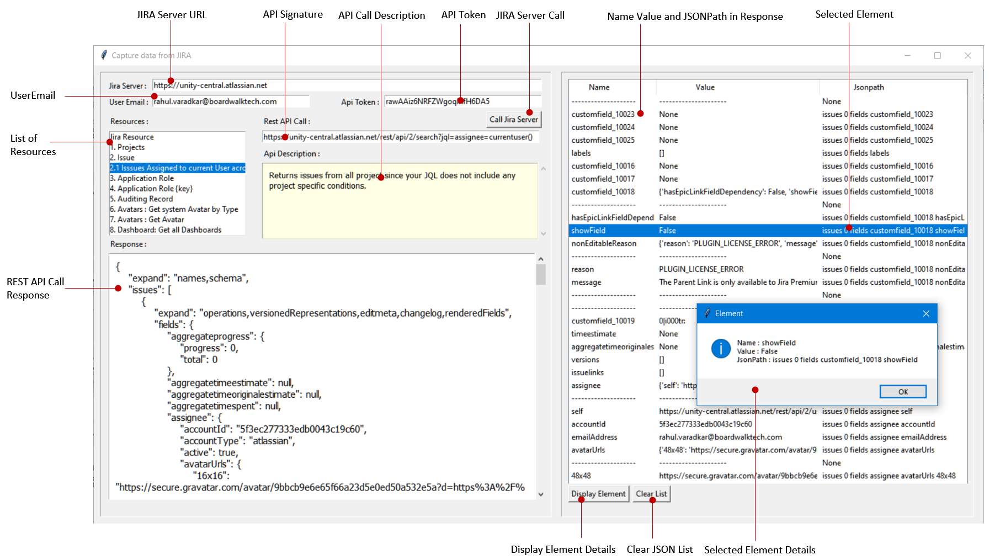

16. Extracting information from JIRA Server using REST API
-
-
Cover Page
16. Extracting information from JIRA Server using REST API
Date : 23-September-2020

-
1. What is JIRA?
Jira Software is part of a family of products designed to help teams of all types manage work.
Originally, Jira was designed as a bug and issue tracker. But today, Jira has evolved into a powerful work management tool for all kinds of use cases, from requirements and test case management to agile software development.
The Jira REST API enables you to interact with Jira programmatically. Use this API to build apps, script interactions with Jira, or develop any other type of integration.
-
2. JIRA REST APIs
The Jira REST API enables you to interact with Jira programmatically.
Basic auth for REST APIs
Jira's REST API is protected by the same restrictions which are provided via Jira's standard web interface. This means that if you do not log in, you are accessing Jira anonymously. Furthermore, if you log in and do not have permission to view something in Jira, you will not be able to view it using the Jira REST API either.
Getting your API token
API tokens are the the recommended method for using basic auth. You can generate an API token for your Atlassian account and use it to authenticate anywhere where you would have used a password. This enhances security because you are not saving your primary account password outside of where you authenticate, you can quickly revoke individual API tokens on a per-use basis, and API tokens will allow you to authenticate even if your Atlassian Cloud organization has two-factor authentication or SAML enabled.
Click here to know how to generate Api Token.
We are using following credentials to access JIRA REST Api.
UserName: rahul.varadkar@boardwalktech.com
Api Token: rawAAiz6NRFZWgoqlhfH6DA5
-
3. Form Interface
Following image display the form Interface for Extraction of Information from JIRA Server.

The functionality of 'Capture data from JIRA' Form Interface is as follows :
1. It allows user to connect to JIRA Server using Basic Authentication, that includes UserEmail and API Token.
2. It displays list of resources and corresponding REST API Call Signature and it's description.
3. User enters Jira Server, User Email and Api Token for Basic Authentication to JIRA Server.
4. User selects the Resource from the list of Resources. This displays the corresponding REST API Call Signature. User enters parameter in Rest API Call (if any) and clicks 'Call Jira Server' button.
5. The GET Resource Request is sent to JIRA Server that returns response in JSON Format.
6. The returned response in JSON Format from JIRA Server is displayed in Response textbox.
7. All JSon elements in response are displayed as Name, Value and JsonPath in a list
-
4. Python Libraries Used
The required information to be extracted from the JIRA Server is saved in the Framework created in Microsoft Excel with name FrameworkForJiraApi.xlsx.
To read this Framework Settings from Excel file, openpyxl python library is used.
The openpyxl library is downloaded from here
To make REST API Call to JIRA Server and to use Basic Authentication; requests library is used.
Following image shows the downloaded python libraries in Pycharm Settings window:
-
5. Framework Settings
The information to be extracted from the JIRA Server is defined in an Excel File, this definition is called as Framework Settings.
The name of Framework setting Excel Document is FrameworkForJiraApi.xlsx and it is saved in same folder where python programm is running.
Following image shows the defined Framework Setting :
The Framework Settings for extracting the JIRA Server information contains following elements.
a. Jira Resource : The Resource to be extracted from JIRA Server.
b. Api Signature : The GET signature of REST API call to get Resource from JIRA Server
c. Api Description : The description of REST API Call.
-
6. Python Programs
Following are the Python programs developed to extract Information from JIRA Server:
1. JiraForm.py : The Form Interface to display list of Resources, related REST API Signatures and REST API Response in JSON Format.
2. FrameworkSettingsJiraApi.py : This file contains the functionality of reading the Framework Setting defined in Excel file and displaying the Jira Resources, REST API Signature and it's description.
3. JiraRestCall.py : This file defines the Class and the methods to set Requests Properties and methods to get Response from JIRA Server.
-
7. Downloads and Links
1. pythonJiraRestApiModules.7z : Zip file containing python modules to extract information from JIRA Server and Framework Settings in Excel Document.
(JiraForm.py, FrameworkSettiJiraApi.py, JiraRestCall.py, FrameworkForPowerpointDocument.xlsx)
2. openpyxl
Version : openpyxl 3.0.4
Setup command : pip install openpyxl
3. Framework setting Excel Document : FrameworkForJiraApi.xlsx"